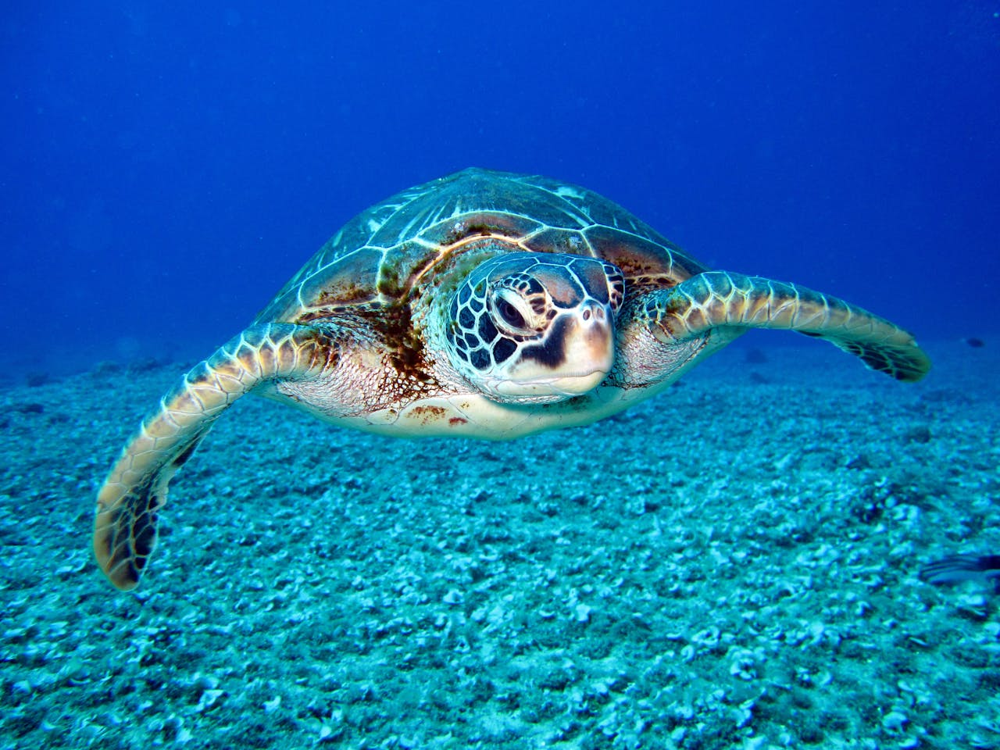

Per una convivenza vantaggiosa e pacifica
La Fondazione esercita in via principale le attività di interesse generale, prefiggendosi a finalità di salvaguardare l'ambiente naturale soprattutto quello a limitata antropizzazione favorendo la coesistenza degli uomini con gli animali allo stato libero, salvaguardando ed enfatizzando il valore e i diritti di entrambi. L'Organizzazione lotta per abolire ogni forma di sfruttamento e violenza sugli animali e promuove ogni forma di tutela della salute umana e della vita animale e vegetale nel suo complesso.La Fondazione si propone di promuovere l'ecologia locale volta alla conservazione della biodiversità, alla mitigazione delle conseguenze negative dei cambiamenti climatici e a favorire la migliore convivenza tra uomo e natura.
L'intento è quello di promuovere e favorire la coabitazione e la pacifica convivenza tra uomo e animali incentivando altresì le soluzioni che risultano proficue per il benessere di entrambi.
Attività di interesse generale della fondazione:
- interventi e servizi finalizzati alla salvaguardia e al miglioramento delle condizioni dell'ambiente e all'utilizzazione accorta e razionale delle risorse naturali
- interventi di tutela degli animali e del loro habitat
- interventi di prevenzione del randagismo
- interventi di accumulo e condivisione di energia da fonti rinnovabili a fini di autoconsumo
- cooperazione allo sviluppo aree rurali anche in paesi terzi
- beneficenza, sostegno a distanza, cessione gratuita di alimenti o prodotti, o erogazione di denaro, beni o servizi a sostegno di persone svantaggiate
- promozione e tutela dei diritti umani, civili, sociali e politici, nonché dei diritti dei consumatori e degli utenti delle attività promozione delle pari opportunità e delle iniziative di aiuto reciproco, incluse le banche dei tempi
